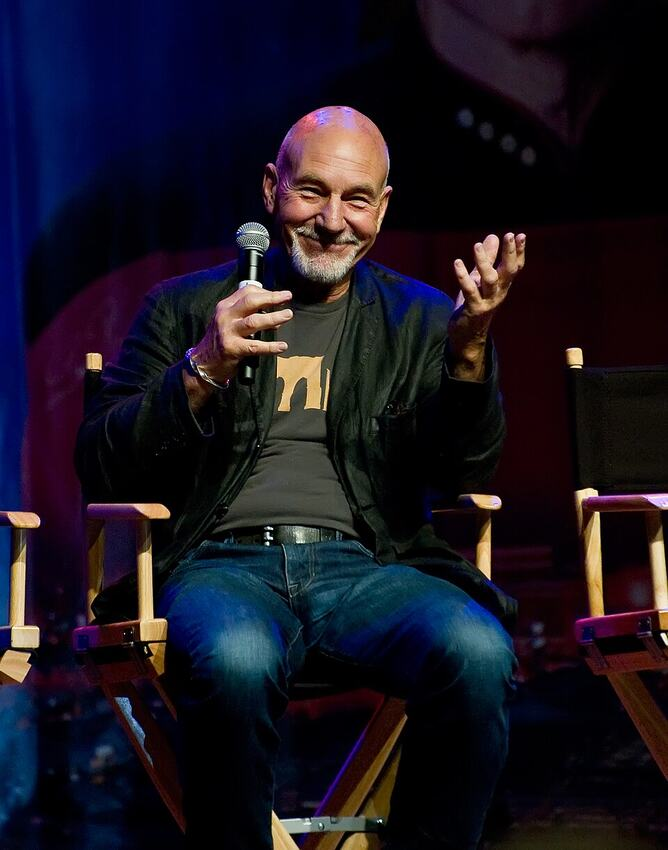
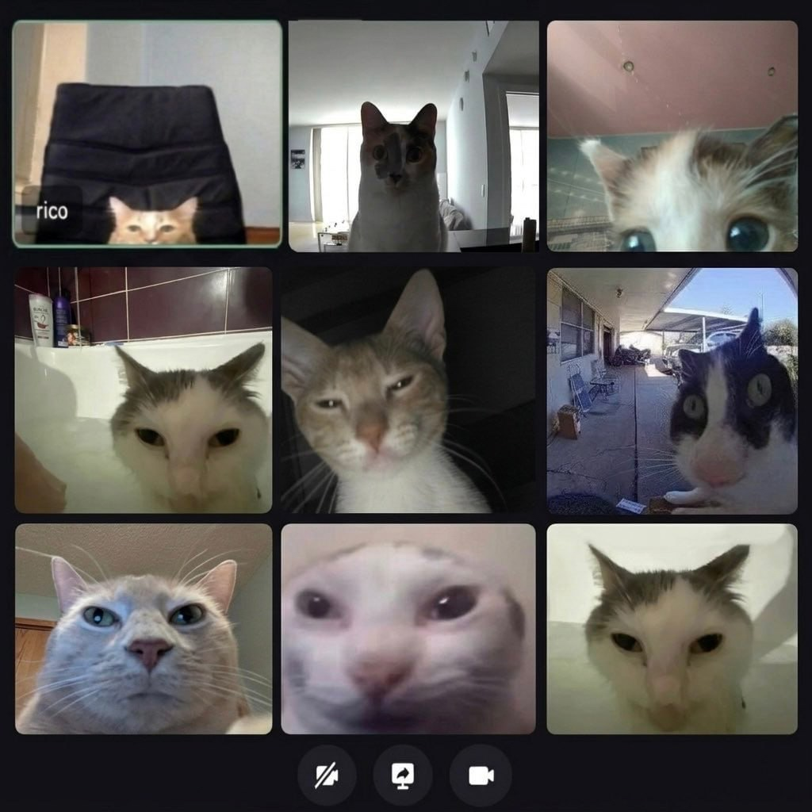

Visitor Statistics
JORDANHARDEE.COM VISITOR LOG
- All-time visits
- —
- Today (UTC)
- —
- Counting since
- —
One visit per tab session. No cookies, IP addresses, or browsing history are stored.
CyberChef
Starting CyberChef...
Internet Explorer
CursorPhreak
Do you use MySpace, own a blog or manage a website?
Copy the CSS or JS code for your selected cursor:
Click a cursor to use it until you refresh the page.
Club Penguin.exe
DOOM.exe
Command Prompt
root@kali:~ — Terminal
Stellarium Web
Loading Stellarium Web…
Contact
PGP public key
Type the characters in the image to unlock the public key.
Guestbook.exe
Leave a note? (Sorry requires a GitHub account)
Sign the guestbook, say hi, or leave whatever's on your mind.
Human verification
Enter the characters in the picture to open the guestbook.
Connecting to GitHub Discussions…
Comments aren't available inside the window yet. You can open the Discussions forum on GitHub.
Blackjack
BLACKJACKDealer stands on all 17s · No betting
Dealer
Your hand
Wins 0 · Losses 0 · Pushes 0
Solitaire
Build A–K by suit in the four foundations. Arrange alternating colors in descending order. Click a card, then its destination—or drag cards with a mouse. Double-click a top card to move it home.
Chess
Unit Converter
Convert between metric, imperial, scientific, and computing units.
Conversions are calculated locally using open-source Math.js.
Graphing Calculator
Graph a function of x, such as sin(x), x^2, or cos(x).
Fractal Explorer
Preparing fractal…
Drag to zoom into details or use the +/− buttons. Complex-plane fractals use expanding BigInt precision for deep zoom; geometric fractals are rendered recursively with practical detail limits.
About Me
Who is Jordan Hardee?
Wikipedia Article of the Day
Opening Wikipedia’s featured article…
News
Open News to load headlines.
Credits
Music
File Select · Super Mario 64 (1996)
Composed by Koji Kondo · Nintendo
Streaming from Internet Archive.
Music belongs to its respective rights holders. Attribution does not grant a license.
Music is off.
Patrick Stewart — In Memoriam
Sir Patrick Stewart
1940–2026
Legend. Rest in peace.

RELEASE THE CATS
The cats have escaped.
happy.exe
Tap play to start happy.exe with sound.
Zoom.exe
